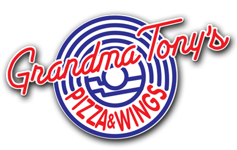
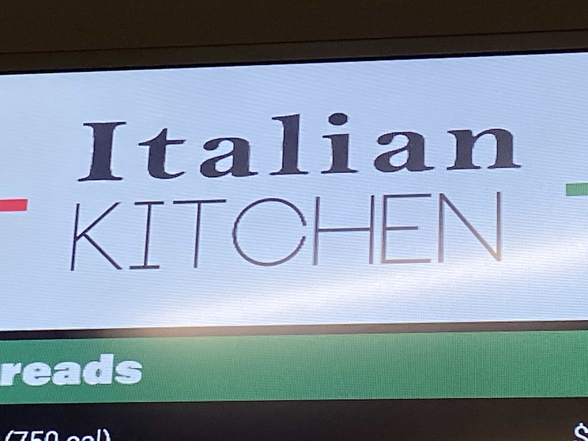
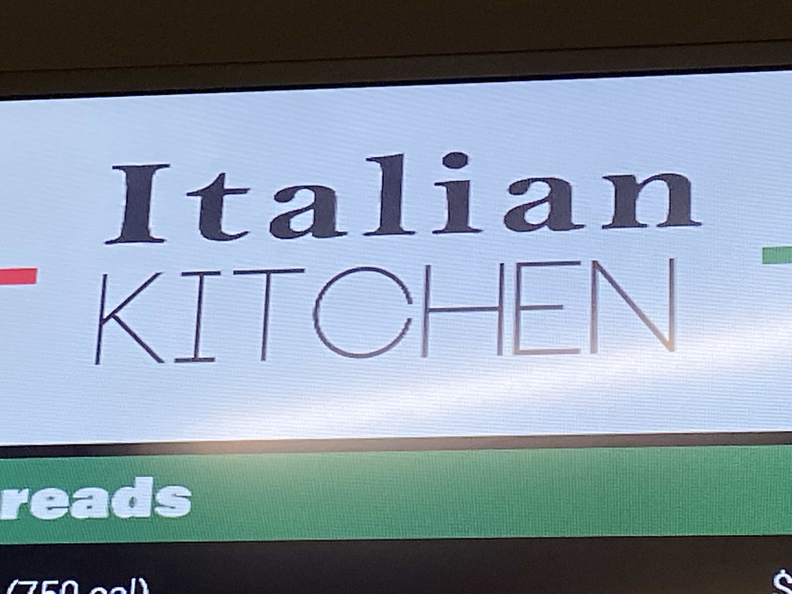

Grandma Tony's Pizza & Wings
Need something to eat while watching a show at the well-known Gaslight Theater? Grandma Tony's is a part of the same business and location as the Gaslight Theater, and Little Anthony's Diner. Tony's even has the reputation of being among the best pizza locations in Tucson. In my opinion however, if this is the best pizza in Tucson, then I am worried to try other pizza restaurants around the city. The quality of toppings and dough was low and the balance of cheese to the rest of the pizza was overwhelming. This being said, definitely go see a Gaslight Theater show and try one of the Big Bopper milkshakes from Little Anthony's!


 
